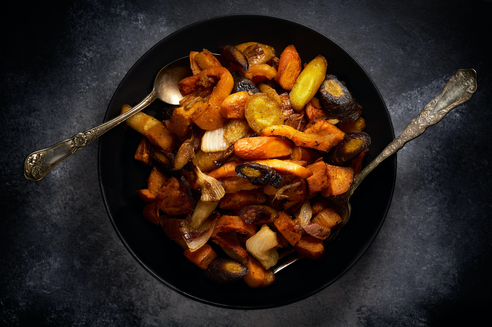
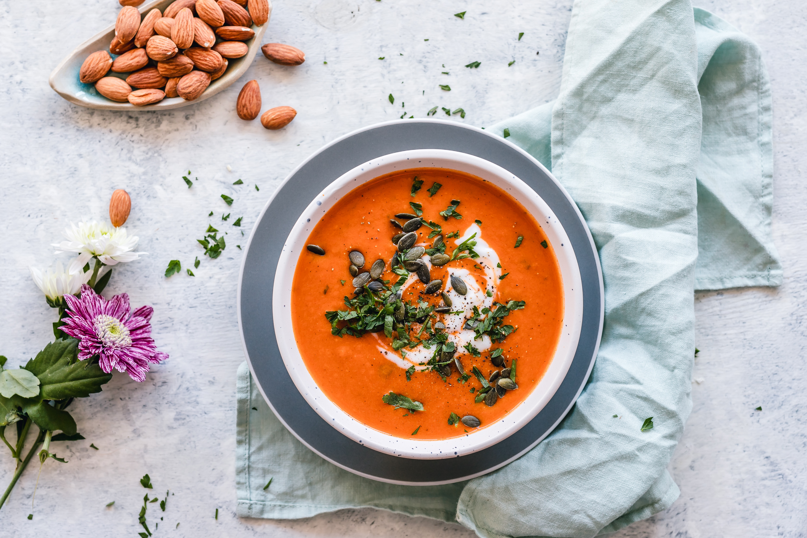

VitaNutri
Recetas Cetogenicas
Recetas de Dieta Cetogénica
Ensalada Cetogénica

Ingredientes:
- Lechuga
- Queso feta
- Aceitunas
- Tomates cherry
- Aderezo de aceite de oliva y vinagre balsámico
- Sal y pimienta al gusto
Pasos de preparación:
- Lava y corta la lechuga en trozos.
- Añade queso feta desmenuzado.
- Incorpora aceitunas y tomates cherry cortados por la mitad.
- Aliña con aceite de oliva y vinagre balsámico.
- Sazona con sal y pimienta al gusto.
Pechugas de Pollo con Aguacate
.jpg)
Ingredientes:
- Pechugas de pollo
- Aguacates maduros
- Ajo picado
- Aceite de oliva virgen extra
- Jugo de limón
- Sal y pimienta al gusto
Pasos de preparación:
- Condimenta las pechugas de pollo con ajo, sal y pimienta.
- Asa las pechugas hasta que estén cocidas.
- Prepara una salsa de aguacate con aguacates maduros, ajo, aceite de oliva y jugo de limón.
- Sirve las pechugas con la salsa de aguacate por encima.
Vegetales Asados con Aceite de Coco

Ingredientes:
- Brócoli
- Coliflor
- Zanahorias
- Calabacín
- Aceite de coco
- Sal y pimienta al gusto
Pasos de preparación:
- Corta los vegetales en trozos.
- Mezcla los vegetales con aceite de coco, sal y pimienta.
- Asa en el horno hasta que estén tiernos y ligeramente dorados.
Sopa de Aguacate y Espinacas

Ingredientes:
- Espinacas frescas
- Aguacates maduros
- Caldo de pollo
- Crema de leche
- Ajo picado
- Sal y pimienta al gusto
Pasos de preparación:
- Cocina las espinacas en caldo de pollo hasta que se marchiten.
- Mezcla las espinacas con aguacates, ajo y crema de leche.
- Licúa hasta obtener una sopa suave.
- Calienta la sopa y sazona con sal y pimienta al gusto.
Salteado de Camarones con Espárragos
.jpg)
Ingredientes:
- Camarones
- Espárragos
- Ajo picado
- Mantequilla
- Jugo de limón
- Sal y pimienta al gusto
Pasos de preparación:
- Saltea camarones y espárragos en mantequilla y ajo.
- Añade jugo de limón, sal y pimienta al gusto.
- Cocina hasta que los camarones estén rosados y los espárragos estén tiernos.